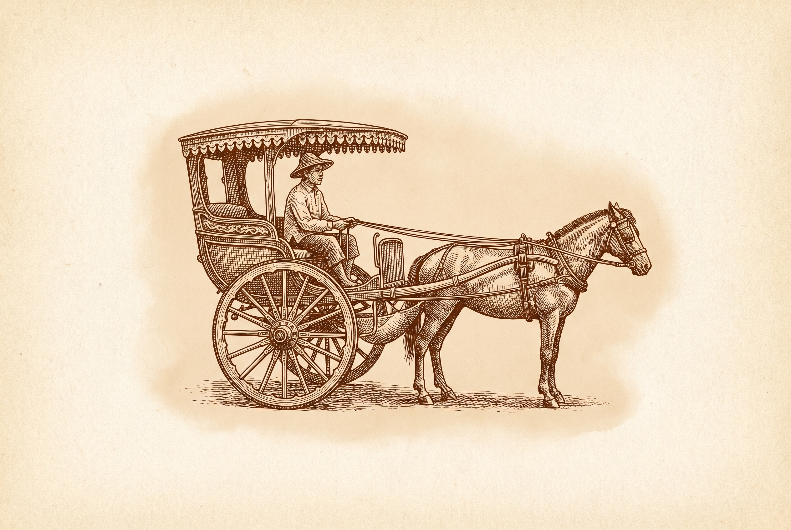
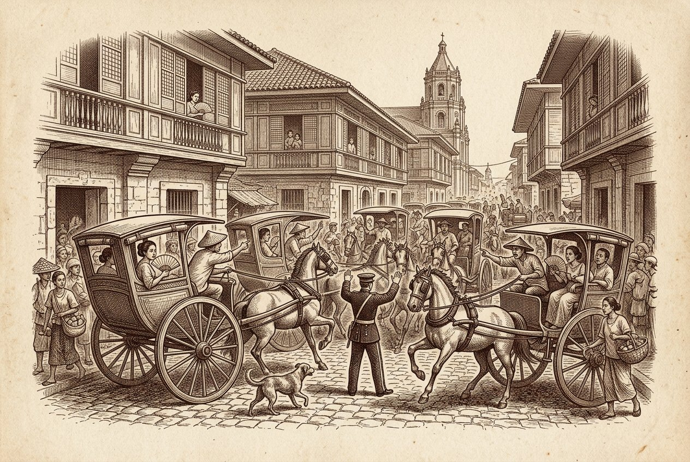
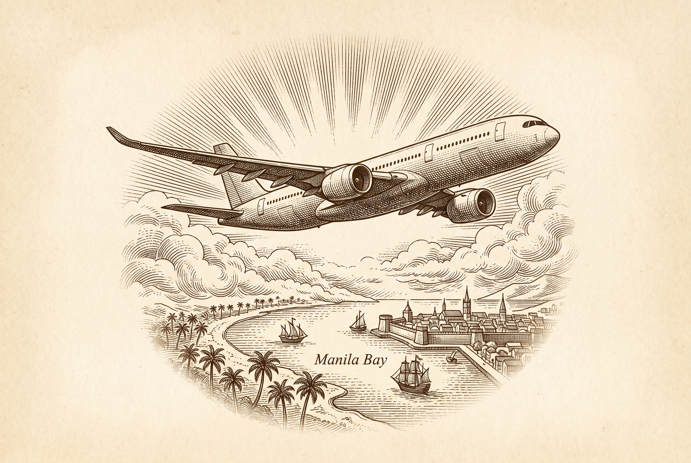

Mabigat po ang trapiko sa Maynila tuwing Sabado ng hapon. Ang ilang kilometro mula Intramuros hanggang Diamond Hotel ay hindi mahuhulaan ang tagal. Umalis po kayo nang maaga at magpasundo sa Grab nang may sapat na oras, para hindi kayo magmadali sa daan.
Manila traffic is genuinely unpredictable, a trip that takes 10 minutes on a quiet morning can take an hour at the wrong time of day. On a Saturday afternoon, the few kilometres from Intramuros to the Diamond are just as unpredictable. Build in extra buffer for anything time sensitive, airport transfers, the ride to the ceremony, the ride to the reception, connections between hotels. Book your Grab early, or use the shuttle once it is confirmed. Getting a car is rarely the problem, the road itself is.
Locals joke that EDSA has its own gravitational pull, once a jeepney enters, time stops mattering. Leave earlier than you think you need to.

Both routes run on the current 2026 schedule. Flight times and days this far ahead of April 2027 are not final, please reverify closer to booking.
Same time zone as Perth, so there is no jet lag either direction. Book 3 or more months ahead where you can, direct flights run only a few times a week and seats on the wedding weekend will move fast once other guests start booking.
Magbakasyon po kayo sa mga isla. Take a holiday on the islands.
The Philippines has more than 7,000 islands, and people come for the islands, not for Manila. The wedding is the reason to come. The islands are the reason to stay. April is dry season, which makes it the best time of year for the beach. Flights from Manila to the main island destinations take roughly one to two hours.
If you can, arrive on Thursday 8 April. Wednesday 7 April is the safer choice, because a delayed flight on Thursday would cost you the only spare day before the ceremony.
A week is the shortest trip that still reaches an island. Palawan needs the longer itinerary, because getting there takes up most of a day.
El Nido is our pick for a first island. Its boat tours are sold as Tours A, B, C and D, each one a different set of lagoons, beaches and rocky islands. Our Palawan guide on the Things to Do page has the tour breakdown, two video guides, and how to get there.
Roxas Boulevard, Manila Bay. This is the reception venue itself, Constellation on the 27th floor, so staying here means no transport to sort out after the reception. The bridal party will be staying at the Diamond for the whole weekend.
San Agustin Church is about 2 kilometres away. That is 10 to 15 minutes on a quiet road, but Saturday afternoon traffic is unpredictable. A shuttle bus with limited seating will run guests from the Diamond to the church and back for the ceremony, register interest once the RSVP page is live. Taxis and Grab are also easy to find in the area if you would rather go under your own steam.
Best for: guests who want the simplest possible weekend, close to the ceremony, reception in the same building.
Five star stays for guests who want to make a week of it. The Manila Hotel is the closest to the church. The rest are 20 to 30 minutes away, so allow extra time on the day.
Rizal Park, at the edge of Intramuros. Open since 1912, one of the oldest hotels in the Philippines, with 510 rooms and Filipiniana style interiors. San Agustin Church is about 1.1 kilometres away, roughly a 13 minute walk along Bonifacio Drive, or a 2 to 3 minute taxi ride. Given the April heat, a short taxi is the more comfortable option on the day itself.
Best for: guests who want the closest five star to the church and to be inside the old city rather than out on the bay.
About 6.5 kilometres from Intramuros, a short taxi or Grab ride. This is the city’s strongest luxury cluster: The Peninsula Manila, Raffles Makati and Fairmont Makati (in the same complex), Makati Shangri-La, and Dusit Thani Manila.
Best for: guests extending their trip, with the best dining and shopping on the doorstep.
Driving times below are from Google Maps in normal traffic. Manila at the wrong hour can add half again, so treat them as the shortest case.
Best for: guests who want a resort style stay, with dining, spas and shows on site.
Room block rates at the Diamond and airline group rates are still being confirmed, register interest once the RSVP page is live.